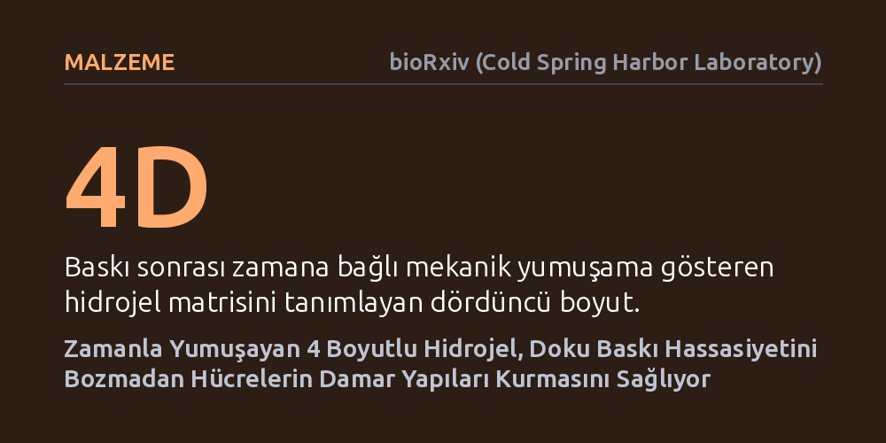

MALZEME · bioRxiv (Cold Spring Harbor Laboratory) · 2026-10-07
Araştırmacılar, 3 boyutlu biyoyazıcılarla damarlı doku basarken karşılaşılan malzeme sertliği kısıtını aşmak için zamanla yumuşayan 4 boyutlu bir hidrojel geliştirdi. Jelatinin zamanla yapıdan ayrılması sayesinde, mikro ölçekli baskı hassasiyeti korunurken hücrelerin damar benzeri yapılar oluşturabildiği gösterildi.
Yapay doku basımında baskı netliği ile hücresel damarlanmanın gerektirdiği doku yumuşaklığı arasındaki zorunlu ödünleşimi ortadan kaldırarak gerçeğe daha yakın organ modelleri üretilmesini sağlıyor.

Üç boyutlu biyoyazıcılarla yapay doku üretirken karşılaşılan en büyük hedeflerden biri, hücreleri besleyecek ve canlı tutacak kılcal damar ağlarını doğru şekilde inşa edebilmektir. Ancak dijital mikroayna cihazlarına (DMD) dayalı yüksek çözünürlüklü ışıkla katılaştırma yöntemlerinde uzun süredir aşılamayan bir malzeme kısıtı bulunuyordu: Baskının dağılmaması ve mikro ölçekteki ince kanalların tıkanmadan korunabilmesi için polimer yoğunluğunun ve çapraz bağların yüksek olması gerekiyordu; bu durum basılan yapıyı oldukça sert hale getiriyordu.
Oysa insan vücudundaki yumuşak dokular ve özellikle damar endotel hücreleri, hayatta kalabilmek ve işlevsel damar boşlukları (lümen) oluşturabilmek için son derece yumuşak ve esnek bir çevreye ihtiyaç duyar. Sert hidrojellerin içinde hapsolan hücreler göç edemez, yeniden şekillenemez ve damar ağları kuramaz. Biyomühendislikte bugüne kadar yüksek baskı çözünürlüğü ile hücrelerin ihtiyaç duyduğu biyolojik yumuşaklık birbirine zıt iki zorunlu tercih olarak görülüyordu.
Araştırmacılar, bu temel çıkmazı aşabilmek amacıyla basıldığı anda mikro mimariyi net şekilde koruyan, ancak basım tamamlandıktan sonra biyolojik dokular gibi kendiliğinden yumuşayan dinamik bir malzeme tasarlayıp tasarlayamayacakları sorusuna odaklandı.
Araştırma ekibi bu problemi çözmek için zaman faktörünü devreye sokan "4D GelMA-Cad/jelatin" hibrit hidrojelini geliştirdi. Bu formülasyonda iki ana bileşen yer alıyor: İlki, hücre tutunmasını destekleyen N-kadherin taklitçi peptit içeren ve ışıkla kalıcı bağlar kuran GelMA-Cad ağı; ikincisi ise ışıkla çapraz bağlanmayan ve geçici bir matris düzenleyici görevi gören serbest jelatin molekülleri.
Geliştirilen malzemenin kimyasal yapısı nükleer manyetik rezonans (NMR) spektroskopisiyle doğrulandı. Hidrojelin gözenek morfolojisi dondurularak kriyojenik taramalı elektron mikroskobu (kriyo-SEM) altında görüntülendi ve malzemenin zamana bağlı sertlik değişimi mekanik testlerle nicel olarak takip edildi.
Ardından bu malzeme yüksek çözünürlüklü DMD biyoyazıcı platformunda kullanılarak iki zorlu biyolojik yapı üzerinde sınandı: Kan-retina bariyeri damar ağı ve damarlı akciğer-alveol doku modelleri. Akciğer modellerindeki hücrelerin genetik tepkileri ve hücresel farklılaşma durumları ise tek hücre RNA dizileme yöntemiyle ayrıntılı biçimde incelendi.
Deneyler, geliştirilen hibrit hidrojelin baskı sırasında mikro ölçekli desen doğruluğunu ve geometrik hassasiyetini eksiksiz koruduğunu gösterdi. Baskı işlemi tamamlandıktan sonra ise çapraz bağlanmamış jelatin molekülleri hidrojel ağından yavaşça difüzyon yoluyla dışarı sızdı. Bu ayrılma, ana GelMA-Cad iskeletinde yapısal bir bozulmaya yol açmadan hidrojelin zaman içinde kademeli olarak yumuşamasını sağladı.
Malzemenin yumuşaması ve N-kadherin peptitlerinin sağladığı biyoaktif ortam sayesinde hücrelerin canlılığını koruduğu gözlendi. Üretilen retina yapılarında iç kan-retina bariyerine benzer damar oluşumları elde edildi; damarlı akciğer-alveol modelinde de hücrelerin mikromimari yapı içinde kendi boşluklu damar ağlarını başarıyla organize edebildiği tespit edildi.
Tek hücre RNA dizileme analizleri, akciğer modelindeki hücrelerin çevrelerine özel gen ifadesi tepkileri verdiğini ortaya koydu. Özellikle akciğer kılcal damarlarına özgü endotel hücre özelliklerinin ve tip 1 benzeri alveol epitel hücre durumlarının belirgin şekilde zenginleştiği saptandı.
Bu çalışma, ışık tabanlı 3 boyutlu biyoyazıcılarda uzun süredir devam eden bir malzeme kısıtını ortadan kaldırıyor. Baskı hassasiyeti ile baskı sonrası doku mekaniğini birbirinden ayırarak, hem mikro mimarisi korunmuş hem de hücrelerin damarlanmasına elverişli yumuşak doku modelleri inşa etmenin mümkün olduğunu kanıtlıyor.
Geliştirilen bu 4 boyutlu platform, özellikle retina ve akciğer gibi karmaşık ve hassas organların laboratuvar ortamında gerçeğe çok daha yakın modellerinin üretilmesini sağlayabilir. Bu tür damarlı doku modelleri, hastalık mekanizmalarının aydınlatılmasında ve yeni ilaç adaylarının hayvan deneylerine gerek kalmadan test edilmesinde önemli bir köprü işlevi görebilir.
Bununla birlikte çalışma henüz laboratuvar aşamasında elde edilmiş in vitro ön bulgulara dayanmaktadır. Malzemenin uzun süreli doku olgunlaşmasındaki kararlılığı, daha büyük hacimli organ yapılarına uygulanabilirliği ve canlı organizmalara nakil durumundaki biyolojik uyumu gelecekteki araştırmalarla doğrulanmalıdır.